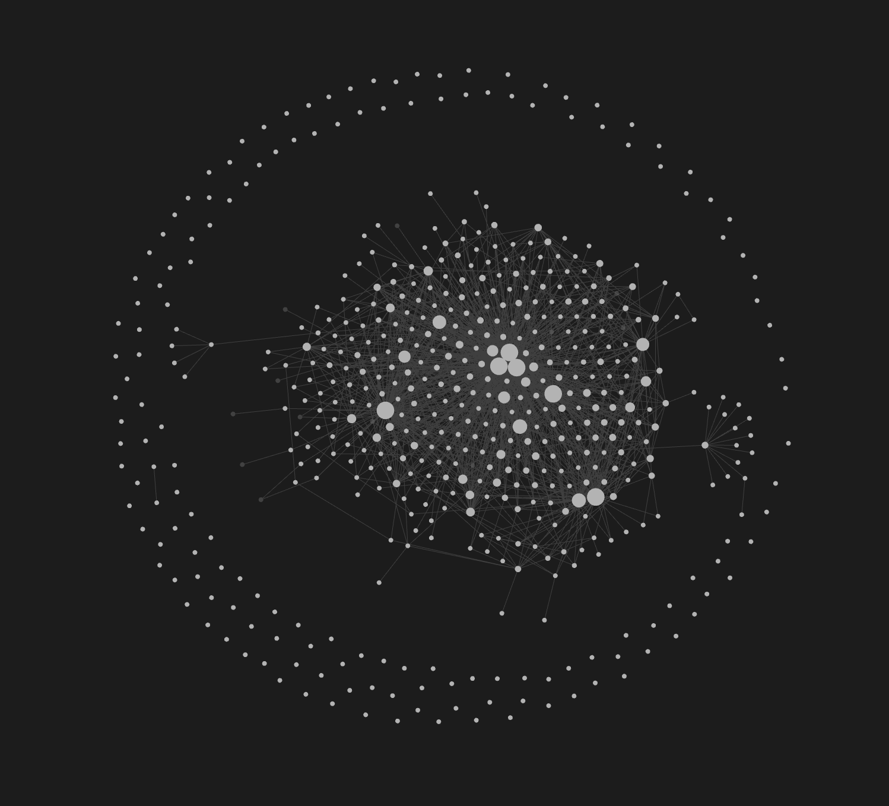
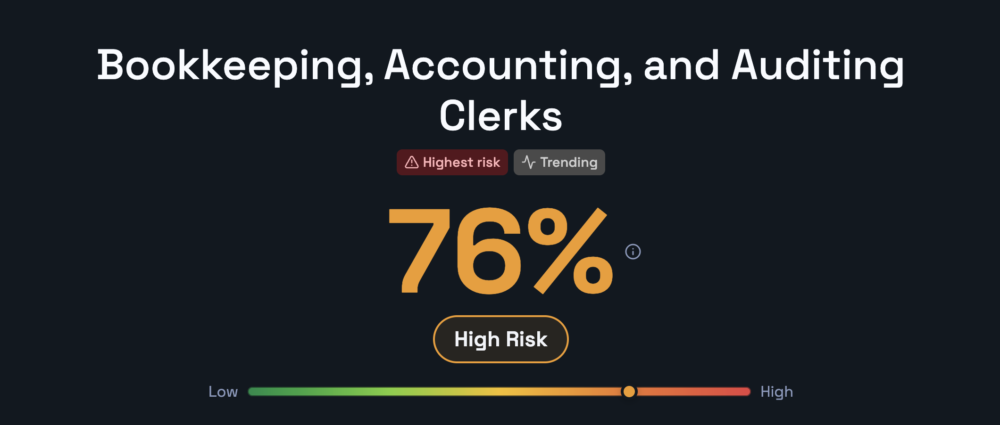
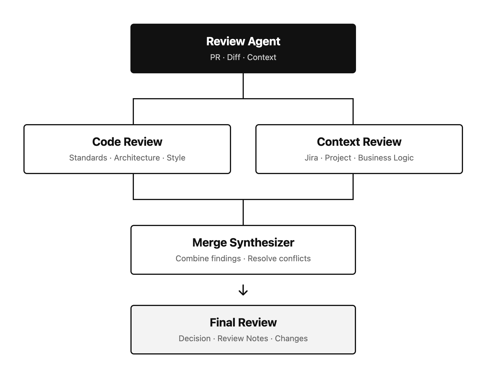

Life Is a Network of Interconnected Repeated Games
There has been a recurring theme in how I have viewed my life recently, an idea that I have found useful across nearly every domain. It has helped me visualize complexity, recognize connections that I previously overlooked, and see the world in a fundamentally different way.
Life is a network of interconnected repeated games.
The people, skills, ideas, habits, relationships, assets, and opportunities in our lives can be viewed as nodes in a graph. The edges represent the connections between them: how one skill improves another, how a relationship creates an opportunity, how better health strengthens career performance, or how a project builds both capability and reputation.
The games we repeatedly play activate and reshape this network. Every decision is a move that can create a new node, strengthen an existing connection, weaken another, or open a path that did not previously exist.
This is loosely analogous to neuroplasticity. When patterns of thought or behavior are repeatedly activated, the brain can strengthen and reorganize the pathways involved. In the same way, the choices we repeatedly make reinforce certain paths through our lives. Each decision changes not only the immediate outcome, but also the position from which we play the next game.
I also see this pattern in my AI workflows. In graph-based agent systems, a complex goal can be divided among specialized nodes, with each agent responsible for a distinct but related task. Some agents can work in parallel, independently analyzing different dimensions of the same problem, before their outputs are combined into a larger conclusion or action. Complex outcomes emerge from specialized components exchanging information, not from one component maximizing its individual output.
No individual node needs to understand or complete the entire objective alone. The value emerges from how the nodes are designed, how information moves between them, and how their individual outputs contribute to the wider system.
Life works in a similar way. Health, knowledge, relationships, reputation, technical ability, and financial resources may appear to be separate areas, but they continually exchange value. Their combined effect can produce outcomes that none of them could create independently.
The objective, therefore, is not to maximize the payoff from any single game. It is to build a graph in which each game creates assets, capabilities, relationships, reputation, and opportunities that improve the games that follow.

My Obsidian Graph
One of the clearest examples of this idea in my own life is my Obsidian graph. I am a huge note-taking nerd and have been collecting and organizing notes for years.
Obsidian allows me to connect ideas across subjects, discover relationships I did not initially know existed, and visualize those connections through a network graph like the one shown above.
A note may begin as an isolated thought about AI, finance, neuroscience, game theory, or personal development. Over time, as I link it to other ideas and apply it in different contexts, it becomes part of a larger structure.
Some notes develop into dense clusters of related knowledge. Others become bridges between subjects that initially seemed unrelated. A few become central hubs that influence how I understand almost everything else.
The graph is therefore more than a visualization of what I know. It is also a record of how I connect ideas.
Two people could read the same books, attend the same meetings, and learn the same concepts, yet construct very different graphs. They may notice different patterns, create different links, and reinforce different paths based on their experiences and ways of thinking.
This is what makes the graph personally meaningful. The value is not only in the number of notes it contains, but in the quality of the connections between them.
The Games We Play
In game theory, players make decisions within a set of rules, incentives, and possible outcomes. When the game is repeated, each decision can affect not only the current result but also the conditions of future rounds.
Daily life is filled with these games. An argument at work over a process, a negotiation for a higher salary, an attempt to finish a difficult climbing problem, or a run in which you try to move as fast as possible can all be viewed as games with competing strategies and payoffs.
The natural instinct is often to optimize for the current round. You want to win the argument, send the climb, run the fastest time, or extract the highest possible price. But maximizing the immediate payoff can reduce the total value produced across the larger sequence of games.
What I realized from thinking about network graphs, game theory, and neuroscience is that these games are not isolated. They are connected, and every decision changes the conditions under which future games will be played. The payoff function should therefore account for the entire network of repeated interactions, not merely the visible outcome of the current round.
Sometimes this means choosing not to spend trust and social capital on a low-value argument. Sometimes it means ending a climbing session before exhaustion so that you can recover, adapt, and perform better later. Sometimes it means running slowly for weeks to build the aerobic capacity required to eventually run fast. Sometimes it means accepting a less-than-perfect price or salary today because the relationship, experience, reputation, or future opportunity is worth more than the immediate difference.
These choices may look like losses when viewed as isolated games. Across a longer time horizon, however, they can be the strategies that produce the highest total payoff.
The question is not simply:
How do I win this game?
It is:
What move gives me the best position across all the games that follow?
Small Nodes With Asymmetric Upside
I remember during the 2020 presidential campaign, Andrew Yang was talking a lot about automation and how AI would eventually replace large parts of the workforce. I looked up Will Robots Take My Job? and saw that accounting had a > 90% chance of being automated. The same site now estimates a 39% risk for accountants and auditors, although it assigns higher risk to more routine bookkeeping and accounting-clerk work.

At the time that scared me, so I started learning Python and automating parts of my own job.
It seemed like a small decision, but in hindsight it became a major node in my personal network. The downside was mostly time and the possibility that I would never become good enough for it to matter. The upside was that I would gain a technical skill and move closer to the systems that could eventually change my career.
Then ChatGPT came out and immediately felt revolutionary to me. A lot of people saw it as a chatbot that could write emails or answer questions. I saw the possibility of something much bigger and quickly built a RAG chatbot that could execute Python with local open-source models. This gave me an instinct for how LLMs worked.
None of these things felt huge at the time. Learning Python, automating accounting work, experimenting with open-source models, building retrieval systems, and organizing my knowledge in Obsidian were all small nodes.
But over time, those nodes connected.
Accounting gave me the domain knowledge. Python gave me the ability to automate. Data engineering taught me how information moves through systems. AI gave me a new layer of leverage. Obsidian helped me connect everything together.
Eventually, I ended up at the intersection of finance, data engineering, and AI right as that combination became valuable. By the time the opportunity showed up, I was not starting from zero. I had already spent years building the nodes and strengthening the edges.
Mapping the Fruit Fly Brain
I recently came across a paper that mapped the connections between neurons in a fruit fly brain using network geometry.
The researchers already knew where each neuron was physically located in three-dimensional space. But instead of mapping the neurons only according to their physical coordinates, they created another map based on how the neurons were connected.
Network geometry of the Drosophila brain
ChatGPT’s ELI5 explanation described the result like this:
“The structure of the brain’s network was represented more effectively in a two-dimensional hyperbolic graph than through the neurons’ actual physical positions. Neurons with similar roles naturally formed clusters, highly connected neurons appeared closer to the center, and the distance between nodes helped capture how information could move through the network.”
The paper does not show that physical location is irrelevant. Instead, it shows that physical location alone does not fully describe a neuron’s role in the network. To understand that role, you also need to know what the neuron connects to, what connects to it, and where it sits relative to the wider structure.
This immediately made me think about my Obsidian graph and the way I visualize my own mind.
An individual node may look insignificant by itself. Learning Python was initially just one skill. Accounting was one domain. Building an Ollama RAG chatbot was one side project. Writing notes in Obsidian was one habit. None of them independently explains where I eventually ended up.
Their meaning emerged from their connections.
Python connected accounting to automation. Data engineering connected automation to larger systems. AI connected those systems to a new form of leverage. Obsidian helped me recognize and strengthen the relationships between all of them.
In isolation, each node had limited value. Together, they formed a cluster around finance, data engineering, and AI that eventually became highly relevant to my career.
I see the same kind of transfer in fitness. In college, I became heavily involved in powerlifting and learned how to plan training around progressive overload, fatigue, recovery, and supercompensation. Years later, those ideas became useful when I started planning MoonBoard sessions, projecting difficult climbs, and scheduling deload weeks.
Now that I am running, the activity is different, but many of the underlying principles are familiar. I follow a structured schedule, build an aerobic base, manage fatigue, and gradually prepare to peak for a race.
Powerlifting, climbing, and running may look like separate nodes. But they are connected by a deeper understanding of training, adaptation, recovery, and long-term progression. Knowledge gained in one game improves how I play the next.
The fruit fly paper does not prove that a person’s life or thoughts can literally be reduced to this kind of graph. The comparison is an analogy. But it reinforces an idea that appears across neuroscience, AI, knowledge management, fitness, and my own experience:
The meaning and value of a node depend heavily on what it is connected to.
A skill is not valuable only because of what it allows you to do by itself. Its value also depends on which other skills, people, problems, and opportunities it can connect.
An experience is not meaningful only because of its immediate outcome. Its meaning may come from how it changes your future decisions or strengthens a path that becomes useful years later.
The graph can reveal something that examining each node individually cannot: the larger structure emerging from their relationships.
Designing AI the Same Way
As I learned more about graphs and networks, I realized that I had started designing my AI workflows around many of the same principles.
One example is code review. Inside my work Obsidian vault, I have a review agent that branches into two specialized sub-agents.
I run this workflow before submitting a pull request for human review. One agent reviews the code from an engineering perspective, including coding standards, PySpark style, repository architecture, and framework patterns. The other reviews the Jira requirements, project context, business logic, and whether the implementation actually solves the intended problem.
The two agents work in parallel and remain focused on separate dimensions of the review. This reduces context drift and avoids forcing one agent to hold every technical and business requirement in the same prompt.
Their findings then fan back into a merge synthesizer, which compares the results, resolves conflicting recommendations, and produces one final review containing a decision, review notes, and the specific changes or additions I should make.

The strength of the workflow does not come from asking one agent to understand everything. It comes from dividing the problem into specialized nodes and deliberately controlling how information moves between them.
Graph-based orchestration has become an increasingly common pattern in AI systems, but what stood out to me was how naturally I arrived at the same structure. My interests in network graphs, neuroscience, knowledge systems, and software architecture had already trained me to think in terms of specialized nodes, parallel processing, and information flowing back into a larger system.
I was applying the graph before I had fully articulated the theory behind it.
Internal and External Graphs
I now see my life as two increasingly evolving graphs. Every decision I make affects both whether or not I know it yet.
The external graph is the visible structure of my life: the skills I develop, the projects I build, the people I meet, the blogs I write, my career, the assets I accumulate, and the opportunities that become available.
The internal graph is what develops inside my mind: the ideas, instincts, habits, mental models, and connections that shape how I see the world.
Every game affects both.
Learning Python gave me a technical skill, but it also changed how I approached repetitive work. Building AI systems gave me new tools, but it also trained me to break complex problems into specialized components. Powerlifting, climbing, and running improved different physical abilities, but together they taught me how to think about adaptation, recovery, and long-term progression.
My experiences change how I think. How I think changes the decisions I make. Those decisions create new experiences, relationships, capabilities, and opportunities, which then reshape how I think again.
This is why the games we choose matter beyond their immediate outcomes. Repeatedly playing a game trains us to become a particular kind of player.
Life is a network of interconnected repeated games, but we are not fixed players moving through a static network. Every move changes our position, changes the graph, and changes the person making the next move.
Eventually, the graph we build becomes the life we have and the person we become.
Subscribe
Get new posts by email.